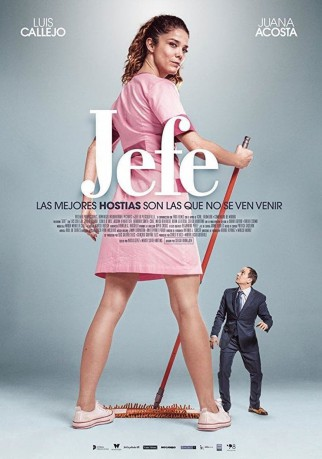

#9829 Jefe - Der Chef
 
 IMDB-Wertung: 5.4 / 10
IMDB-Wertung: 5.4 / 10  Metascore: 0
Metascore: 0 
Bislang hatte César (Luis Callejo) eigentlich alles im Leben, beruflich wie privat. Doch zuletzt ist ziemlich der Wurm drin. Seine Frau hat ihn verlassen und droht ihm auch noch damit, den gemeinsamen Sohn wegzunehmen. Und auch bei der Arbeit gibt es Ärger: Das von ihm gegründete Unternehmen klagt unter rapide sinkenden Profiten. Wenn nicht bald etwas geschieht, dann war es das, die Aktienteilhaber werden bereits unruhig. Da macht César die Bekanntschaft von Ariana (Juana Acosta), die nachts die Büroräume putzt und ihm dabei hilft, das Leben noch einmal von einer anderen Perspektive aus zu sehen.
Jahr: 2018
Dauer: 89 Minuten
FSK:
Land: Spanien Studio: Super 8Tonspuren:
Untertitel: Deutsch, Englisch,
Auflösung: 1080p (1920x1080) Größe: 1556 MB
Genre: Komödie
Regisseur: Sergio Barrejón
Drehbuch: Natxo López, Marta Piedade
Soundtrack: Jimmy Barnatán, Ana Álvarez Prada
Darsteller:
 Luis Callejo als César
Luis Callejo als César- Juana Acosta als Ariana
- Carlo D'Ursi als Gómez
 Bárbara Santa-Cruz als Teresa
Bárbara Santa-Cruz als Teresa- Dalila Carmo als Pereira
- Alan Maxson als Office Staff
- Veronica Scheyving als Jimena
- Josean Bengoetxea als Javier
- Maika Barroso als Jimena
- Adam Jezierski als Charly
- Karlos Aurrekoetxea als Ejecutivo 2
- Goize Blanco als Ejecutiva 3
- Carlos García Miranda als Ejecutivo 5
- Juan Martín Gravina als Ejecutivo 4
- Diana Lázaro als Laura
- Sergio Quintana als 2018
- Maya Reyes als Ejecutiva 1
Datei: X:\2018(G-M)\Jefe - Der Chef (2018, FSK, 1920x1080).mkv seit 29.10.2018
Festplatte: HD 2018(G-Z)-2019(A-Z)
 Es gibt insgesamt 138 Filme in der Gruppe '2018(G-M)'
Es gibt insgesamt 138 Filme in der Gruppe '2018(G-M)'